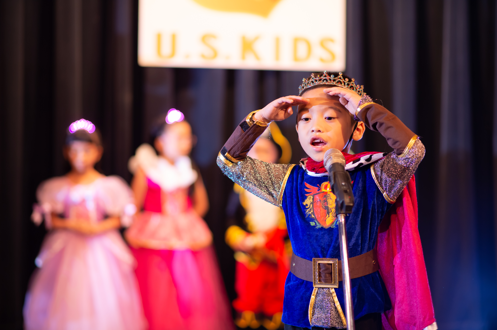
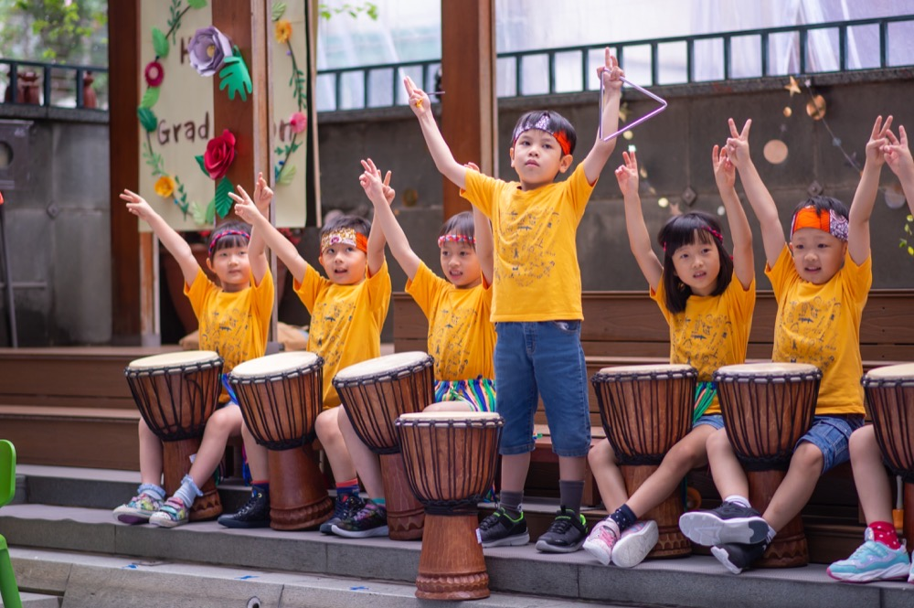
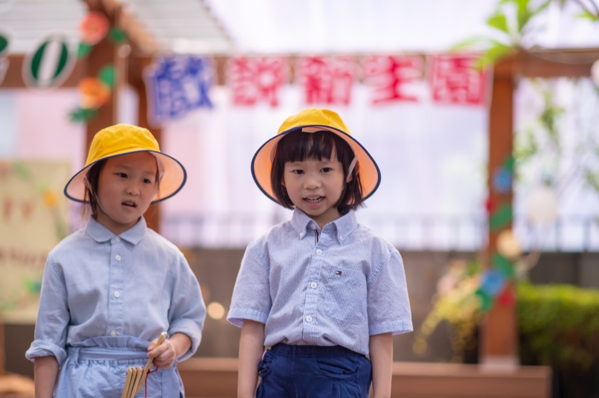
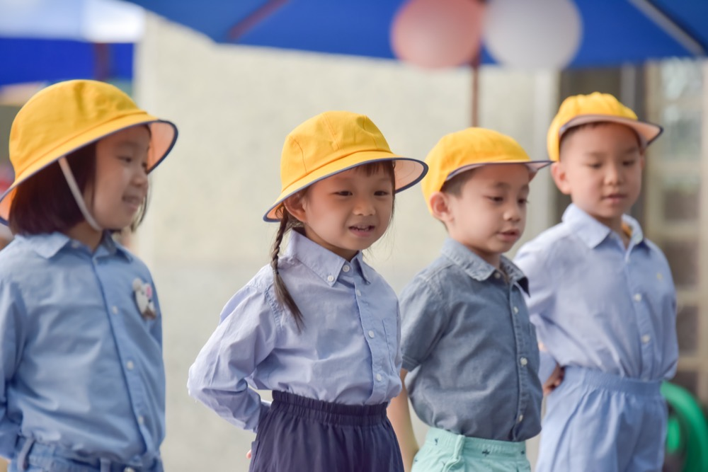

🎥 幼兒園畢業典禮攝影作品集
畢業典禮紀錄影片・畢業照微電影・畢業旅行與校外教學精華
這一頁主要整理幼兒園畢業典禮相關的影片作品，包含典禮全程紀錄、精華短片，以及搭配畢業照拍攝的微電影、畢業旅行與校外教學精華剪輯。老師與家長可以直接透過這些影片，感受實際成品的畫面風格與節奏。
若想看更多學士服個人照、小組照、班級大合照等「照片作品」，可回到：幼兒園畢業照攝影作品集。
🎬 幼兒園畢業典禮紀錄與畢業照微電影精選
以下這個 YouTube 播放清單主要收錄：幼兒園畢業典禮紀錄影片、幼兒園畢業照微電影、畢業旅行與校外教學攝影精華，方便老師與家長參考實際成品，了解畫面風格、剪輯節奏與現場拍攝氛圍。
若無法正常播放，亦可直接前往播放清單觀看：YouTube｜幼兒園畢業典禮紀錄・畢業照微電影・畢業旅行攝影
📸 畢業典禮照片作品精選
幼兒園畢業典禮現場實拍照片，包含畢業生合照、頒獎感動、舞台表演、家長互動、戶外畢業活動，以馬賽克方式呈現整體氛圍。








